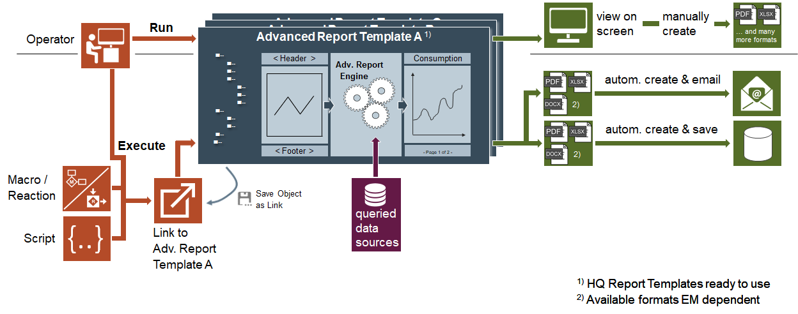

Advanced Reporting

Advanced Reporting allows you to create graphical reports using elements such as charts, graphs, pie charts, images and so on. In order to work with Advanced Reporting, you must install the Advanced Reporting extension and add it to the management station project.
The management station standard Reporting does not support the elements of Advanced Reporting. Advanced Reporting uses advanced capabilities such as grouping, and OLAP Cube to generate such reports.
Advanced Reports are used for reporting data or data series from Desigo CC historic data combined with additional features such as:
- Comparisons
- Benchmarking
- Evaluations
- Calculations
- Hyperlinks
- Enhancements with other data, for example, electricity rate, KPI
These reports provide an output in the HTML format and allow you to save the report data in the following formats:
- Excel
- DOCX
Advanced Reporting reports can display data in any of the languages that are configured in your system. However, you can only view the report output in your logged-in language.
This section provides background information on Advanced Reporting of Desigo CC. For related procedures, see the step-by-step section.